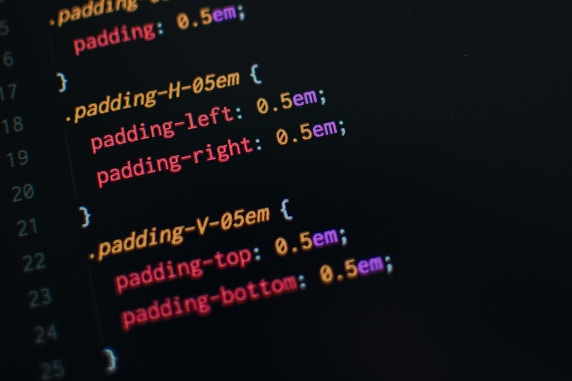
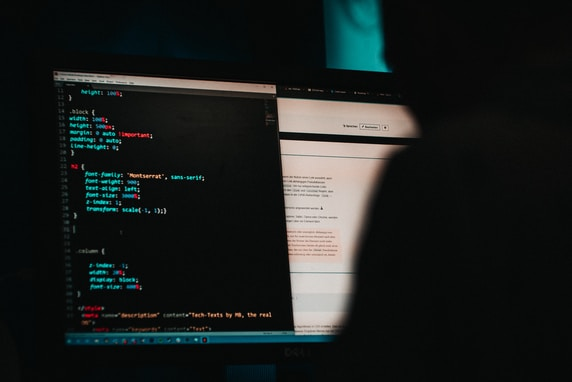
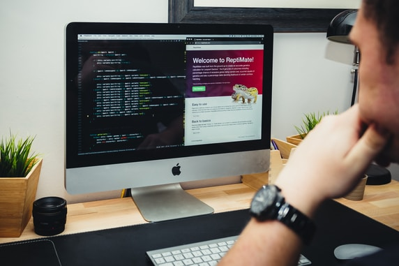
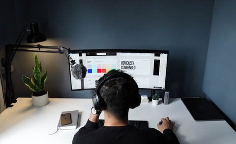
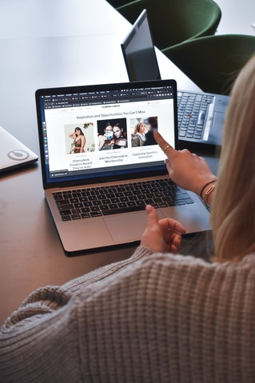

-

Como utilizar o CSS da melhor forma em 2021
Aprenda a utilizar as melhores técnicas de css e criar interfaces consistentes
Entretenimento
Curiosidades
-

Como utilizar o HTML da melhor forma em 2022
Crie estrutras HTML que forneça uma capacidade semântica de qualidade para os...
Dicas
-

Trabalho em equipe - como melhorar a comunicação
Comunicação clara e objetiva é uma skill muito necessária no mercado de trabalho, então va...
Dicas
-

O que CSS moderno pode oferecer para aprimorar a acessibilidade
Nesse post vamos aprender conceitos modernos de css para aprimorar a acessibili...
Novidades
Recents Posts
-
Como manter a consistência nos estudos
-

Home Office - será esse o futuro de todas empresas?
-
Como manter o ambiente de estudos organizado e agra...
Popular Posts
-

Bancos de imagens gratuítos para utilizar em seus projet...
-
O que considerar na hora de comprar um pc novo
-
Qual a diferença entre UI Design e Front end